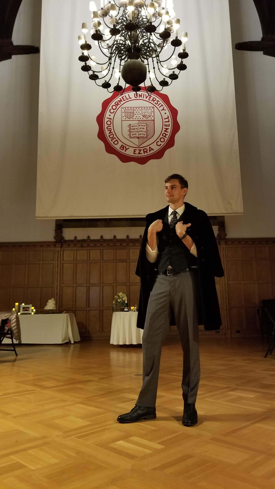

Alex Mann
Every year that goes by, it feels like more and more has happened. I suppose this could be due to the Earth gradually getting further from the sun, but I doubt my internal clock is able to measure down to the microsecond.
2019, oh dear sweet 2019. You certainly held a lot in store for us all. You had about the same number of weddings as other years, and blessedly you had far fewer funerals.
Natalie has once again moved us from a city we loved to a city full of soon-to-be-friends. After much deliberation and guidance Nat accepted an offer to attend the University of Wisconsin-Madison to pursue her PhD in Design History. She is fortunate to be following her mentor from Chipstone and has already found her new advisor incredibly supportive. Her accomplishments are still pouring in, though it's always the little things that I find myself being so proud of. She now warms the pasta sauce up before serving it...to guests. (baby steps)
Upon hearing that Natalie will soon have more diplomas than her, Jules has decided to also re-enroll in school. Hilariously, both seem to be doing it for the treats and belly rubs. It's a weird but loving household.
My dottering old mother has moved on to a better place. She now lives in New Brunswick with dear Thomas. Her graduation from seminary was well attended, though some of us had to celebrate with her later. For her birthday she told me that she needed a few hours of help preparing food...for her 70 guests...5 hours later, we were done with the food prep! The day of the party could not have been more fun. It was great getting to see so many loved ones in one place, and to celebrate my mother's joint birthday with Tom, and Barack Obama!
TRIGGER WARNING
On a serious note, the night before the party was the massacre in Dayton, Ohio. We were only a 5 minute drive up the road from where the carnage took place. Our conversations about what to do for dinner that night all centred on us going to the area where everything happened. It was only my desire to stay in and have a light meal that prevented us from going. Supporting more comprehensive action on firearms in the United States should not be a taboo conversation anymore. I know that in writing this, many of my loved ones will balk at the fact that I "politicized" the holidays. To them, I would say: [please donate to reforming gun laws in the United States here!](https://www.bradyunited.org/)
END TRIGGER WARNING
Continuing the trend of a rather _Goud_-wedding once a year, our sister Ellie married her long time partner Micheal at Cornell's very first Jewish-Celtic-Catholic wedding. Bagipipes, the hora, siblings, family, what could be better? Bryan convinced us all to venture out late at night for Ithaca's finest ice cream. His girlfirend promptly added to her photo collection of him inhaling food.
Charley possibly has the coolest news of the lot for this year. He now lives in South Africa. Yes. The country. Charley was accepted by the Peace Corps and will be stationed in South Africa for the next 2 years. To send him off, Bryan and I put together a weekend in LA for us all. If you're looking for a Wright Family member, you only have to look in two places: Quebec, or LA. We had an amazing memorial day weekend with Natalie's cousins, the brothers and significant "others." A weekend of beaches, tacos, and hikes. Charles, your family is so proud of you, especially your brothers.

Bryan continues to have outstanding and discerning taste. For the longest time, he has been a go to for cinema, books, and food. On our trip to LA we ate far too well. He was a consumate host and only occassionally grumpy. He continues to have success in his endevours as he has seen promotions, and more responsibilities. His new beau has a keen eye for photography. I've been told she has an album of nothing but Bryan eating burritos...mid bite:
The Little Brother continues to make mayhem at every turn. He's become quite the staple at the climbing gym, though not for his honestly impressive abilities at the intended tasks. No, he likes to do backflips, back-hand-springs, and basic parkour. He's yet to be reprimanded so we take what we can get. His writing has improved dramatically, with his english teacher noting his prowess for story. We continue to explore and learn in the kitchen, eggs are a favourite thing to make, though he can make more complicated sweet potato dishes and cakes. Jules has solidly claimed him as her boy...though that could be entirely due to the ratio of food eaten vs turned into crumbs.
My grandmother is still up to her antics and crafts. Every time we visit it seems like she has something new and homemade to send us back with. Her best trick right now though, is the amount of Esther Price Chocolates she has stored up. Her building has a monthly allowance for meals. If you don't use it, the retirement home gets to claim it. However, the comissary downstairs also accepts this money. So, logically, at the end of the month, my grandmother sends her aids down to the comissary to clear them out of cholocolates. When we last visited, she gave Natalie 6 boxes, which of course didn't even last 2 weeks.
As for me, I'm still trucking along. I left my job with Circle CI late last year after some mixed messages (read: being nominated for a company award recognizing my achievements and friendliness while at the same time being called "the worst thing to happen to the company"). I am nothing if not a man of many dichotomous talents.
Natalie and I then started a design firm called "Be Nice Now" after a phrase that my grandfather Jerry always said whenever folks were getting too cheeky. I've successfully managed to maintain a steady stream of income doing freelance work through this firm, which even got me helping out at a woodshop with Jerry's tools. It has been a wonderful outlet for my artwork/creativity.
To wrap up the year, an old friend of mine approached me with yet another business venture: The Battle of Giants. I sincerely hope to be able to tell you more about it this time next year.
To my friends, you know who you are.
Cheers, Alex